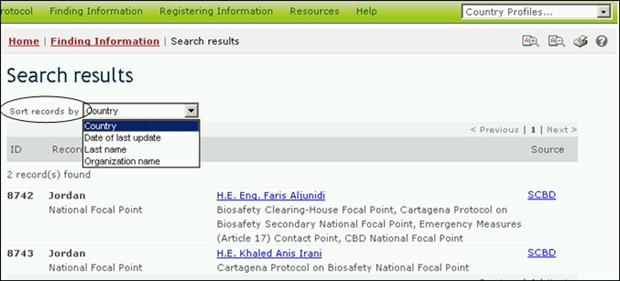

To change how the results of a search are sorted, the user can select one of the options from the drop-down menu, Sort results by, that appears at the top of any search results page. The list of options will include only those options that are relevant to the type of search the user has conducted.

Figure 65
The sorting options that may be available to users include the following:
Country: Displays search results alphabetically by country name;
Date of last update: Displays search results by the date they were added or updated, with the most recently modified records appearing first;
Last name: Displays search results alphabetically by last name of the person or contact point;
LMO trait: Displays search results alphabetically by introduced trait or characteristic. (For a full list of introduced traits, see the ‘LMO traits’ domain in the BCH Thesaurus);
Name of the gene: Displays search results alphabetically by name of the inserted gene. (For a full list and description of inserted genes, see the Gene Registry);
Organism name: Displays search results alphabetically by name of the parental, recipient or donor organism (For a full list and description of organisms in the BCH, see the Organisms Registry);
Organization name: Displays search results alphabetically by name of the organization (organizations may include competent national authorities or biosafety organizations);
Start date: Displays search results by the date on which capacity-building projects or opportunities will start;
Subject area: Displays search results grouped according to the subject area addressed (e.g.. type of LMO, or intended use);
Taxonomic status: Displays search results alphabetically according to the scientific name of the organism;
Technique used: Displays search results alphabetically by the technique used to introduce the modification;
Title: Displays search results alphabetically by the title of the record;
Type of record: Displays search results grouped according to the type of record;
Unique identification: Displays search results alpha-numerically by the unique identification code. (For a full list and description of unique identification codes, see the LMOs-UIds Registry.)